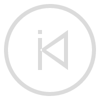
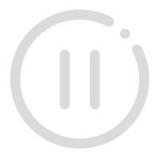
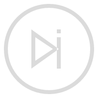

<html>
<head>
  <meta charset="UTF-8">
  <meta name="viewport"
        content="width=device-width, user-scalable=no, initial-scale=1.0, maximum-scale=1.0, minimum-scale=1.0">
  <meta http-equiv="X-UA-Compatible" content="ie=edge">
  <title>播放器</title>
  <script src="https://cdn.bootcdn.net/ajax/libs/vue/3.2.47/vue.global.js"></script>
  <style>
    html, body, ul, li {
      padding: 0;
      margin: 0;
    }
    li {
      list-style-type: none;
    }
    #app {
      padding: 20px;
    }
    .player {
      width: 1022px;
      height: 670px;
      border-radius: 6px;
      box-shadow: 0 0 10px  gray;
    }
    .player-header {
      box-sizing: border-box;
      padding: 6px;
      height: 60px;
      background-color: rgba(77, 239, 202, 0.8);
      /*color: rgb(250, 250, 250);*/
      color: #fff;
      font-size: 17px;
      line-height: 48px;
      border-top-left-radius: 6px;
      border-top-right-radius: 6px;
    }
    .player-body {
      display: flex;
      height: calc(100% - 60px - 70px);
    }
    .player-body-list {
      box-sizing: border-box;
      padding: 10px 5px;
      width: 200px;
      height: 100%;
      background-color: rgba(117, 183, 239, 0.3);
      overflow: auto;
    }
    .player-body-list::-webkit-scrollbar {
      width: 0;
    }
    .player-body-list-item {
      margin: 3px;
      padding: 2px;
      font-size: 14px;
      color: #333;
      cursor: pointer;
    }
    .player-body-list-item:hover, .player-body-list-item-playing {
      background-color: rgba(117, 183, 239, 0.2);
    }
    .player-body-detail {
      height: 100%;
      flex: 1;
      background-color: rgba(127, 255, 212, 0.2);
      padding: 10px;
      box-sizing: border-box;
    }
    .player-footer {
      display: flex;
      justify-content: space-between;
      height: 70px;
      border-bottom-left-radius: 6px;
      border-bottom-right-radius: 6px;
    }
    .player-footer-info {
      flex: 1;
    }
    .player-footer-control {
      width: 470px;
      background-color: azure;
    }
    .player-footer-control > .control {
      padding-top: 8px;
      display: flex;
      justify-content: space-around;
      cursor: pointer;
    }
    .control > .control-icon {
      width: 30px;
      height: 30px;
    }
    .process {
      width: 350px;
      height: 4px;
      background-color: rgb(229, 229, 229);
      margin: 15px auto 0;
      position: relative;
      border-radius: 2px;
    }
    .process-played {
      height: 4px;
      background-color: gray;
    }
    .process:hover {
      height: 6px;
      border-radius: 3px;
      box-shadow: 0 0 5px rgb(229, 229, 229);
    }
    .process:hover > .process-played {
      height: 6px;
      border-radius: 3px;
      box-shadow: 0 0 5px gray;
    }
    .process:hover > .process-pointer {
      display: block;
    }
    .process-pointer {
      display: none;
      position: absolute;
      left: -4px;
      top: -1px;
      width: 8px;
      height: 8px;
      border-radius: 50%;
      background-color: gray;
    }
    .start_time {
      position: absolute;
      left: -50px;
      top: -9px;
      color: #968282;
      font-size: 15px;
    }
    .end_time {
      position: absolute;
      right: -50px;
      top: -9px;
      color: #968282;
      font-size: 15px
    }
    .player-footer-other {
      flex: 1;
      text-align: center;
    }
    .volume-process {
      position: relative;
      width: 4px;
      height: 50px;
      background-color: rgb(229, 229, 229);
      margin: 10px auto 0;
      border-radius: 2px;
      display: flex;
      align-items: flex-end;
    }
    .volume-process-played {
      position: absolute;
      width: 4px;
      height: 0;
      background-color: gray;
      border-radius: 2px;
    }
    .volume-process-pointer {
      display: none;
      position: absolute;
      width: 8px;
      height: 8px;
      border-radius: 50%;
      background-color: gray;
      left: -1px;
      top: 46px;
    }
    .volume-process:hover {
      width: 6px;
      border-radius: 3px;
      box-shadow: 0 0 5px rgb(229, 229, 229);
    }
    .volume-process:hover > .volume-process-played {
      width: 6px;
      border-radius: 3px;
      box-shadow: 0 0 5px gray;
    }
    .volume-process:hover > .volume-process-pointer {
      display: block;
    }
  </style>
</head>
<body>

<div id="app"></div>

<script>
  /*
  *  TODO BufferSource
  * */
</script>

<script type="module">
  // import { AudioPlayer, PlayerControls, PlayerVisual } from './player.js'
  import { AudioPlayer, PlayerControls, PlayerVisual } from './playerSource.js'
  import { getMusicList }  from './musicNameList.js'
  import { getTimeByStamp } from './tool.js'
  const { createApp, onMounted, ref, reactive, getCurrentInstance } = Vue
  const musicList = reactive(getMusicList())
  const Component = {
    template: `
    <div class="player">
      <div class="player-header">
        <div class="player-header-name">音乐播放器</div>
      </div>
      <div class="player-body">
        <!-- 音频列表 -->
        <ul class="player-body-list">
          <template v-for="(music, index) in musicList" :key="music.url">
            <li
              :class="{ 'player-body-list-item-playing': audioIndex === index }"
              class="player-body-list-item"
              @click="controls.changeAudio(index)">
              {{ music.name.split('.')[0] }}
            </li>
          </template>
        </ul>
        <!-- 播放详情 - 可视化信息 -->
        <div class="player-body-detail">
          <canvas class="player-body-detail-visual"></canvas>
        </div>
      </div>
      <div class="player-footer">
        <div class="player-footer-info"></div>
        <div class="player-footer-control">
          <div class="control">
            
            
            
            
            
            
          </div>
          <div class="process" @mousedown="downProcess" ref="process">
            <div class="process-played" :style="{ width: playProcess }"></div>
            <div class="process-pointer" @mousedown="downPointer" :style="{ left: 'calc(' + playProcess + ' - 4px)' }"></div>
            <div class="start_time">{{ getTimeByStamp(playedTime) }}</div>
            <div class="end_time">{{ getTimeByStamp(totalTime) }}</div>
          </div>
        </div>
        <div class="player-footer-other">
          <div class="volume-process" @mousedown="downVolumeProcess" ref="volumeProcess">
            <div class="volume-process-played" :style="{ height: volumeProcess }"></div>
            <div class="volume-process-pointer" @mousedown="downVolumePointer" :style="{ top: 'calc(' + pointTop + ' - 4px)' }"></div>
          </div>
        </div>
      </div>
    </div>
    `,
    setup () {
      const instance = getCurrentInstance().proxy
      const audioIndex = ref(0)
      let isPlaying = ref(false)

      const loopWayIcon = ref('../Audio/assets/icon/sequence.png')

      // 创建播放器实例
      const player = new AudioPlayer(musicList, 'AUDIO', 'Buffer')
      const controls = new PlayerControls(player, { autoplay: false, initialVolume: 0.5 })
      const visual = new PlayerVisual(player, { canvasSelector: '.player-body-detail-visual' })
      window.controls = controls

      // 开始监听播放器
      watchAction()

      controls.start()

      onMounted(() => {
        // 获取进度条最左端与窗口的距离
        skewProcess = instance.$refs.process.offsetLeft
        // 滚动条滚动时重新计算（进度条最左端与窗口的距离可能会发生变化）
        window.addEventListener('scroll', () => {
          skewProcess = instance.$refs.process.offsetLeft - window.scrollX
        })

        skewVolumeProcess = instance.$refs.volumeProcess.offsetTop
        window.addEventListener('scroll', () => {
          skewVolumeProcess = instance.$refs.volumeProcess.offsetTop
        })

        volumeProcessPlayed = document.querySelector('.volume-process-played')
      })

      function watchAction() {
        /*
        * 点击播放可能会播放失败（或直接操作controls控件），所以如果直接在点击播放后修改 isPlaying 状态可能不会同步更新
        * 通过 player.watcher 通过监听audio元素的事件来通知是否播放
        * 避免播放失败的情况下播放状态未同步的问题
        * */
        player.watcher.on('loadeddata', ({ duration }) => {
          totalTime.value = duration
        })
        player.watcher.on('playing', () => {
          isPlaying.value = true
        })
        player.watcher.on('pause', () => {
          isPlaying.value = false
        })
        player.watcher.on('abort', () => {
          isPlaying.value = false
          playedTime.value = 0
          totalTime.value = 0
          playProcess.value = 0
        })
        player.watcher.on('timeupdate', ({ currentTime, duration }) => {
          const val = currentTime / duration
          playProcess.value = getPercent(val)
          playedTime.value = currentTime
        })
        player.watcher.on('volumeupdate', ({ volume }) => {
          volumeProcess.value = getPercent(volume / 1)
          pointTop.value = getPercent(1 - volume)
        })
        player.watcher.on('changePlay', ({ playIndex }) => {
          audioIndex.value = playIndex
        })
        player.watcher.on('loopWay', loopWay => {
          loopWayIcon.value = `../Audio/assets/icon/${loopWay.toLowerCase()}.png`
        })
      }

      const playProcess = ref(0) // 播放进度
      const totalTime = ref(0) // 音频总时长
      const playedTime = ref(0)
      let skewProcess = 0 // 进度条左边的相对位置
      let startOffset = 0 // 按下鼠标时鼠标的相对位置
      let skewDistance = 0 // 按下鼠标时与当前位置的距离
      let pauseBeforeStatus // 调整进度时需要暂停，用来记录调整进度之前的状态
      let isPress = false // 是否按下
      function getPercent (val) {
        return (val * 100).toFixed(1) + '%'
      }
      // 根据进度条已播放区域的距离计算当前播放进度（时间）
      function getCurrentPositionTime (offset) {
        const percent = offset / instance.$refs.process.offsetWidth
        return percent * totalTime.value
      }
      // 点击进度条调整进度
      function downProcess (event) {
        if (event.target.className === 'process-pointer') return
        const targetTime = getCurrentPositionTime(event.offsetX)
        controls.changePlayProcess(targetTime)
      }
      // 点击进度指示点
      function downPointer (event) {
        // 调整进度时暂停播放，记录播放前的状态
        pauseBeforeStatus = isPlaying.value
        controls.pause()

        isPress = true
        // 鼠标按下时修改相对位置
        startOffset = event.clientX
        skewDistance = 0

        window.onmousemove = movePointer
        window.onmouseup = () => {
          isPress = false
          // 如果调整进度前是播放中状态，继续播放
          if (pauseBeforeStatus) controls.play()
          // 然后重置状态
          pauseBeforeStatus = false
        }
      }
      // 移动进度指示点
      function movePointer (event) {
        if (!isPress) return
        skewDistance += event.movementX
        // 鼠标点击的位置 - 进度条左端距浏览器左边窗口的距离 + 鼠标当前与按下时的偏移量（正负）
        const currentPointX = startOffset - skewProcess + skewDistance
        const targetTime = getCurrentPositionTime(currentPointX)
        controls.changePlayProcess(targetTime)
      }

      const volumeProcess = ref('50%') // 当前音量
      const pointTop = ref('50%') // 计算音量指示点的位置
      let skewVolumeProcess = 0 // 进度条左边的相对位置
      let startVolumeOffset = 0 // 按下鼠标时鼠标的相对位置
      let skewVolumeDistance = 0 // 按下鼠标时与当前位置的距离
      let isVolumePress = false // 是否按下
      let volumeProcessPlayed
      // 根据进度条信息获取当前音量
      function getCurrentPositionVolume (offset, maxVolume = 1) {
        const percent = offset / instance.$refs.volumeProcess.offsetHeight
        const volume = 1 - percent
        if (volume <= 0) return 0
        if (volume >= 1) return 1
        return volume * maxVolume
      }
      // 点击音量进度条调整音量
      function downVolumeProcess (event) {
        let offsetY = event.offsetY
        // 目标对象是音量的指示点时需要修改offsetY
        if (event.target.className === 'volume-process-pointer') {
          offsetY = 50 - (volumeProcessPlayed.offsetHeight + (4 - event.offsetY))
        }
        // 目标对象是已填充的进度条时需要修改offsetY
        if (event.target.className === 'volume-process-played') {
          offsetY = 50 - (event.target.offsetHeight - offsetY)
        }
        const targetVolume = getCurrentPositionVolume(offsetY)
        controls.controlVolume(targetVolume)
      }
      // 点击音量进度指示点
      function downVolumePointer (event) {
        isVolumePress = true
        // 鼠标按下时修改相对位置
        startOffset = event.clientY
        skewDistance = 0

        window.onmousemove = moveVolumePointer
        window.onmouseup = () => {
          isVolumePress = false
        }
      }
      // 移动音量进度指示点
      function moveVolumePointer (event) {
        if (!isVolumePress) return
        skewVolumeDistance += event.movementY
        // 鼠标点击的位置 - 进度条左端距浏览器左边窗口的距离 + 鼠标当前与按下时的偏移量（正负）
        const currentPointY = startOffset - skewVolumeProcess + skewVolumeDistance
        const targetVolume = getCurrentPositionVolume(currentPointY)
        controls.controlVolume(targetVolume)
      }

      return {
        isPlaying,
        musicList,
        audioIndex,
        playProcess,
        controls,
        loopWayIcon,
        volumeProcess,
        pointTop,
        totalTime,
        playedTime,

        downProcess,
        downPointer,
        downVolumeProcess,
        downVolumePointer,
        getTimeByStamp
      }
    }
  }
  const app = createApp(Component)
  app.mount('#app')
</script>

</body>
</html>
